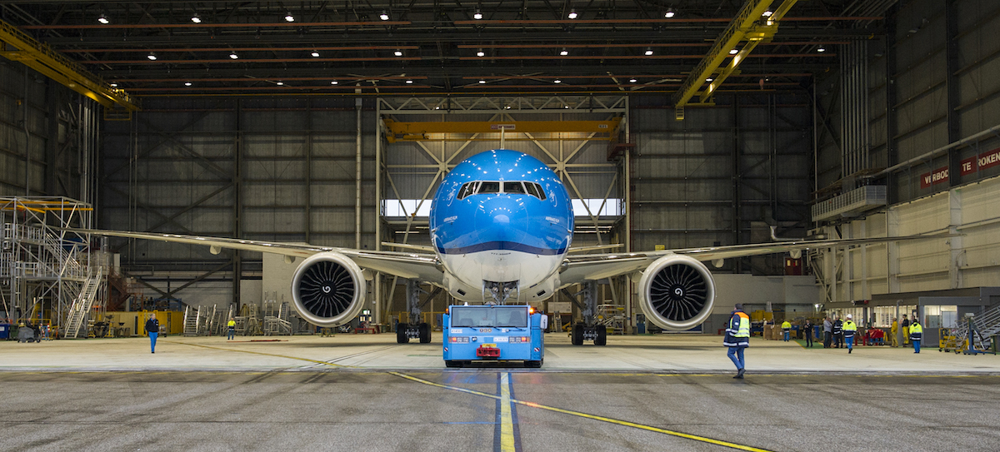

How we helped KLM reinvent their online experience
Aenean sollicitudin, quam vel fermentum consectetur, nunc enim imperdiet ipsum, non scelerisque sem sapien non mauris. Orci varius natoque penatibus et magnis dis parturient montes, nascetur ridiculus mus. Praesent mattis, turpis vel blandit volutpat, nulla nunc elementum nunc, nec ornare felis enim vitae nibh.

Paragraphs are separated by a blank line.
2nd paragraph. Italic, bold, and monospace. Itemized lists
look like:
- this one
- that one
- the other one
Note that --- not considering the asterisk --- the actual text content starts at 4-columns in.
Block quotes are written like so.
They can span multiple paragraphs, if you like.
Use 3 dashes for an em-dash. Use 2 dashes for ranges (ex., "it's all in chapters 12--14"). Three dots ... will be converted to an ellipsis. Unicode is supported. ☺
An h2 header
Here's a numbered list:
- first item
- second item
- third item
Note again how the actual text starts at 4 columns in (4 characters from the left side). Here's a code sample:
# Let me re-iterate ...
for i in 1 .. 10 { do-something(i) }As you probably guessed, indented 4 spaces. By the way, instead of indenting the block, you can use delimited blocks, if you like:
define foobar() {
print "Welcome to flavor country!";
}(which makes copying & pasting easier). You can optionally mark the delimited block for Pandoc to syntax highlight it:
import time
# Quick, count to ten!
for i in range(10):
# (but not *too* quick)
time.sleep(0.5)
print iAn h3 header
Now a nested list:
First, get these ingredients:
- carrots
- celery
- lentils
Boil some water.
Dump everything in the pot and follow this algorithm:
find wooden spoon uncover pot stir cover pot balance wooden spoon precariously on pot handle wait 10 minutes goto first step (or shut off burner when done)Do not bump wooden spoon or it will fall.
Notice again how text always lines up on 4-space indents (including that last line which continues item 3 above).
Here's a link to a website, to a local doc, and to a section heading in the current doc. Here's a footnote [^1].
[^1]: Footnote text goes here.
Tables can look like this:
size material color
9 leather brown 10 hemp canvas natural 11 glass transparent
Table: Shoes, their sizes, and what they're made of
(The above is the caption for the table.) Pandoc also supports multi-line tables:
keyword text
red Sunsets, apples, and other red or reddish things.
green Leaves, grass, frogs and other things it's not easy being.
A horizontal rule follows.
Here's a definition list:
apples : Good for making applesauce. oranges : Citrus! tomatoes : There's no "e" in tomatoe.
Again, text is indented 4 spaces. (Put a blank line between each term/definition pair to spread things out more.)
Here's a "line block":
| Line one | Line too | Line tree
and images can be specified like so:

Inline math equations go in like so: $\omega = d\phi / dt$. Display math should get its own line and be put in in double-dollarsigns:
$$I = \int \rho R^{2} dV$$
And note that you can backslash-escape any punctuation characters which you wish to be displayed literally, ex.: `foo`, *bar*, etc.